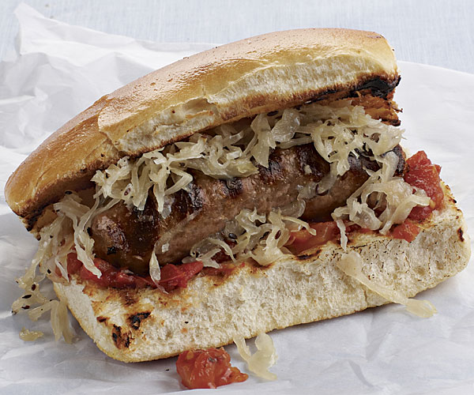

| Schnitzel |
a thin slice of veal or other light meat, coated in breadcrumbs and fried. |
| Bratwurst |  Bratwurst is a type of German sausage made from veal, beef, or most commonly pork. The name is derived from the Old High German Brätwurst, from brät-, finely chopped meat, and Wurst, sausage, although in modern German it is often associated with the verb braten, to pan fry or roast. |